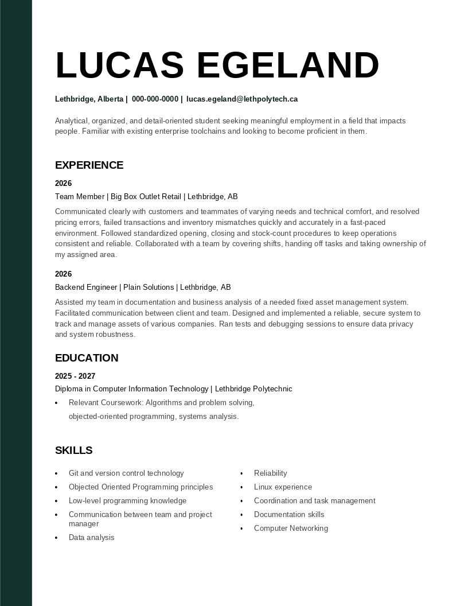
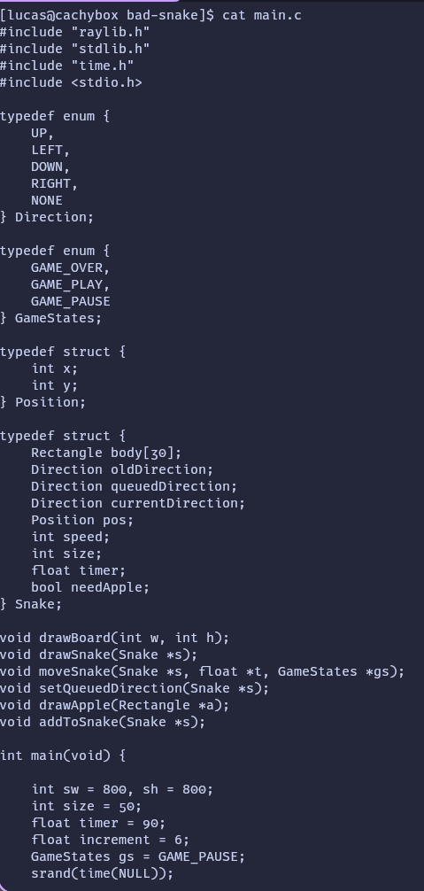
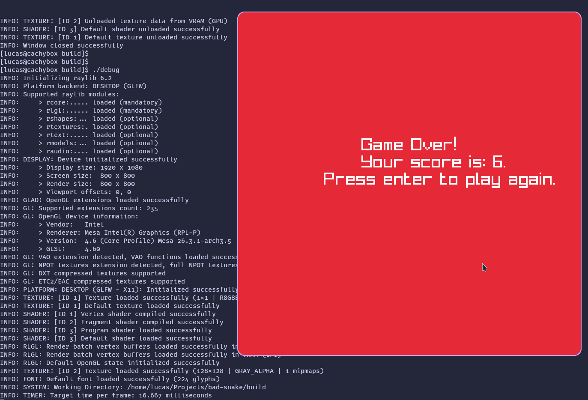
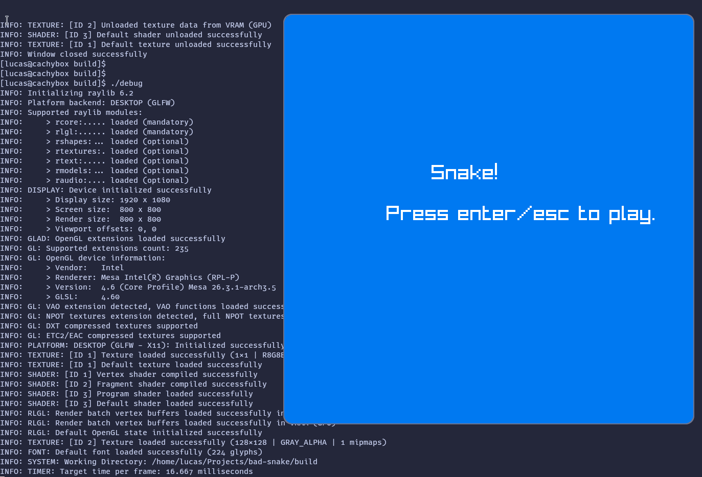
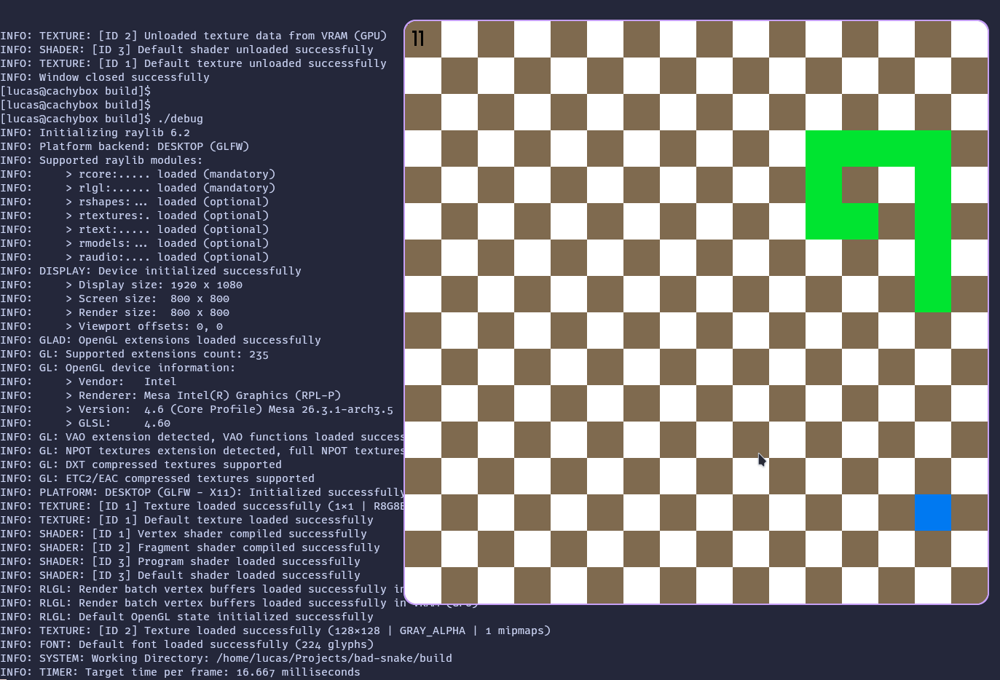

Lucas Egeland
My mission is to help make reliable, clean looking software.


Lucas Egeland
My mission is to help make reliable, clean looking software.


Dear Sir/Madam
I am writing to recommend Lucas Egeland. I have known Lucas personally for the last five years. As a person Lucas was always reliable and trustworthy.
During the time I have known him he has always been a kind and personable person. He helps with any task or project I need help on personally or work related and has
key inputs that are useful and help speed up projects. I've always put a premium on initiative and willingness to learn among people members and Lucas never failed to deliver
on both fronts. Lucas is a delight to work with - a team player with a positive, can-do attitude all the way. I wouldn't hesitate to hire him for any project K-Factor
has in the future if the opportunity arose. Should you have any further questions, feel free to reach me at 587-220-3801.
Thanks
Ken Rasmussen
Owner operator K Factor Insulation inc.
To whom it may concern,
I am pleased to provide this letter of recommendation for Lucas Egeland, whom I had the pleasure of working with this past summer of 2026 at The Big Box Outlet.
Lucas is an exceptionally bright, capable and motivated young man who made a positive impact during his time with our company. He demonstrated a strong work ethic, reliability and a strong sense of pride in the work he performed. He always approached his job with eagerness to take on new challenges or learn new tasks, making him a valuable addition to our team. Although Lucas had limited experience when he started with our team, he quickly demonstrated an impressive ability to learn, adapt and undestand the business.
One of Lucas's greatest strengths is his ability to work well with others while maintaining a helpful customer focused approach. He was personable, courteous and always willing to
assist customers and co-workers whenever needed. He understood the importance of providing excellent customer service and represented our company with professionalism and respect.
What stood out the most about Lucas was his maturity, dependability and the pride he took in doing a job well. These are not easy qualities to find in someone so young, and I believe they will serve him well in any future educational or employment opportunity. I would confidently recommend Lucas to any future employer. He has tremendous potential, a strong foundation of work ethic, and the attitude and personality needed to succeed. I have no doubt that he will continue to grow and accomplish great things.
I wish Lucas every success in his future endeavors and would welcome the opportunity to work with him again.
Thank you kindly for your time,
Amanda Thompson
Supervisor
Big Box Outlet
(amandathompson435@gmail.com)



In summer 2026 I created a snake clone in c. It taught me a lot about manual memory management, the gnu c compliler, linking external libraries such as raylib, and debugging.

Currently, I am working with team quadcore to create a fixed asset management system named LocalExpress for Plain Solutions. It will replace their old excel spreadsheet system. Although it is in the early stages of development, the documentation is coming along nicely and the stack has been figured out. LocalExpress is a full stack app running over a LAN via docker, and will use Node.js for the server, Sveltekit for the frontend, and Typescript for the backend.